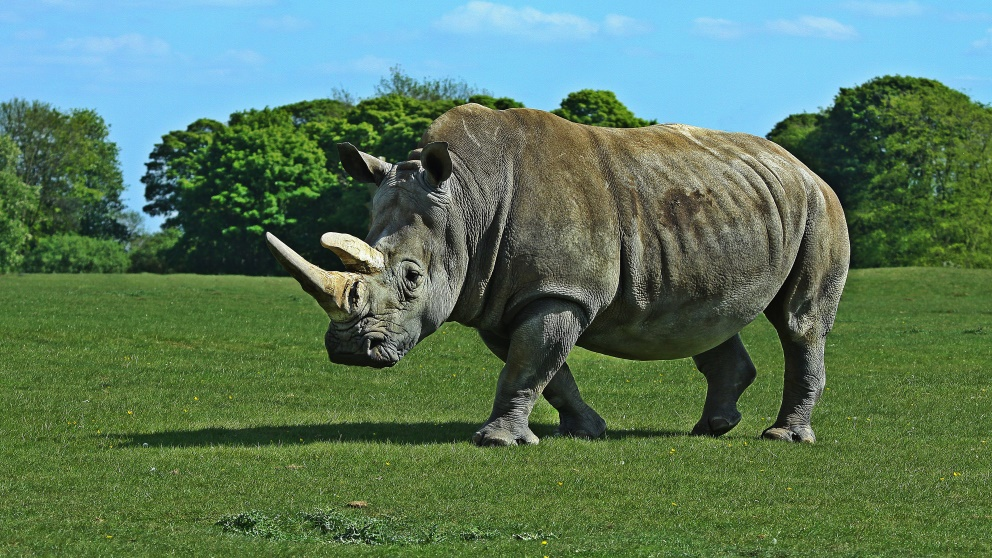
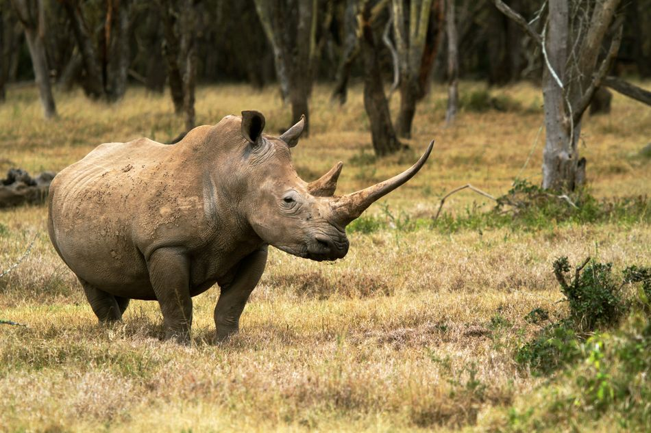
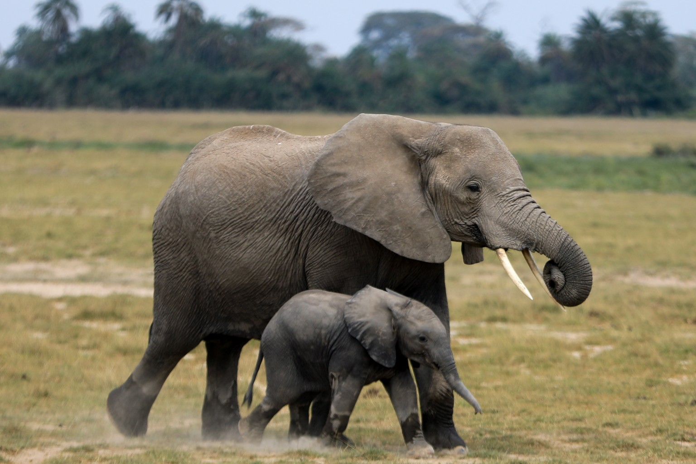
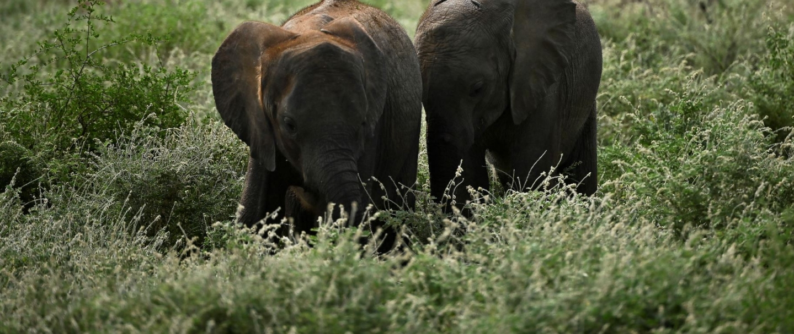
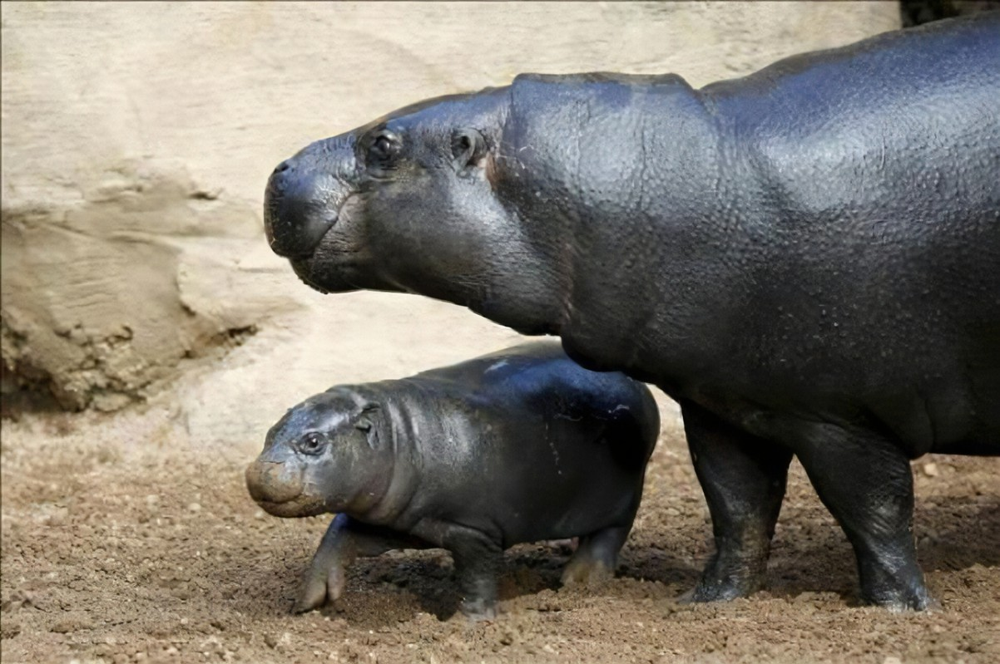
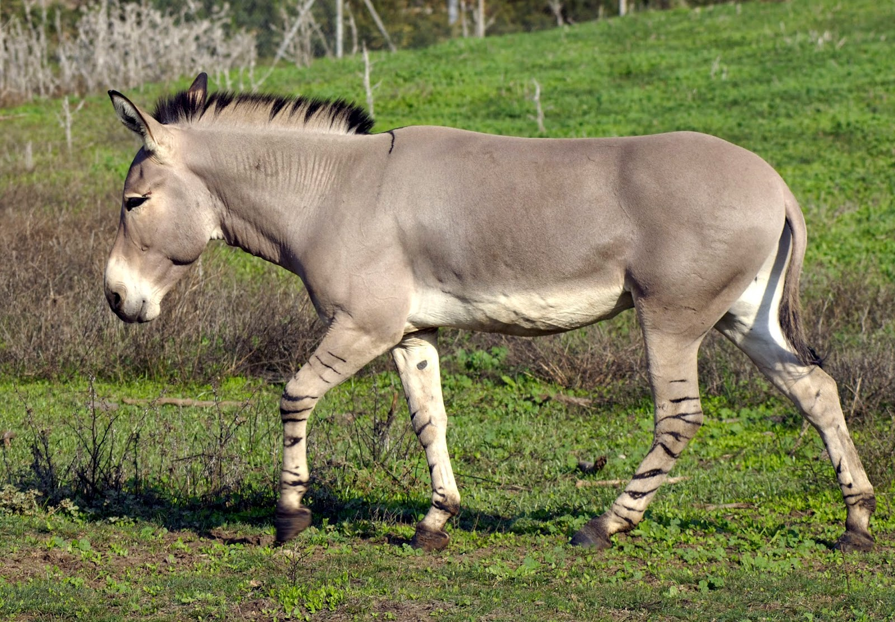
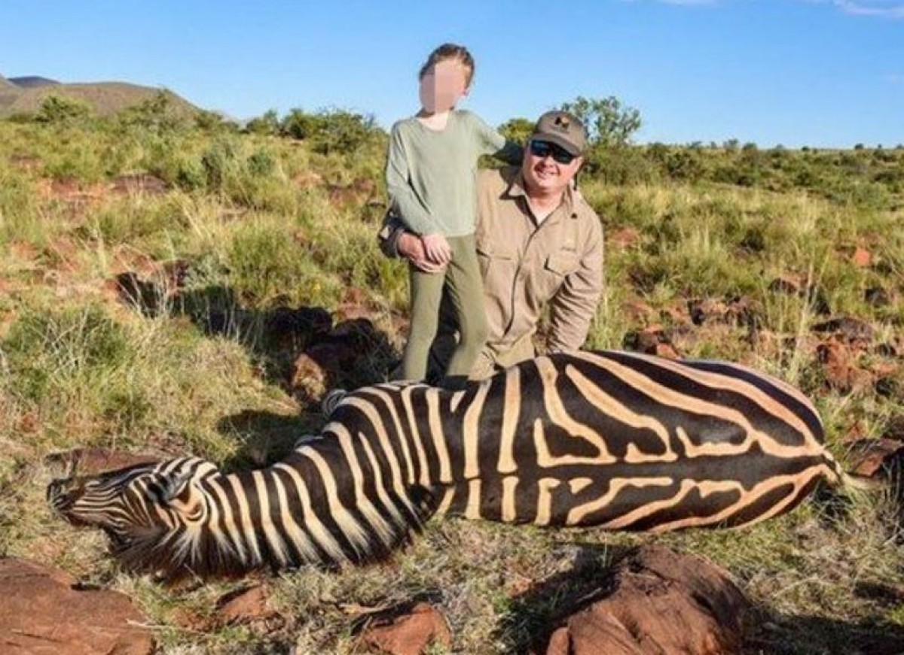
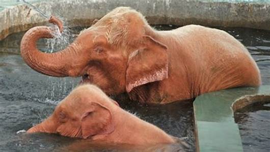
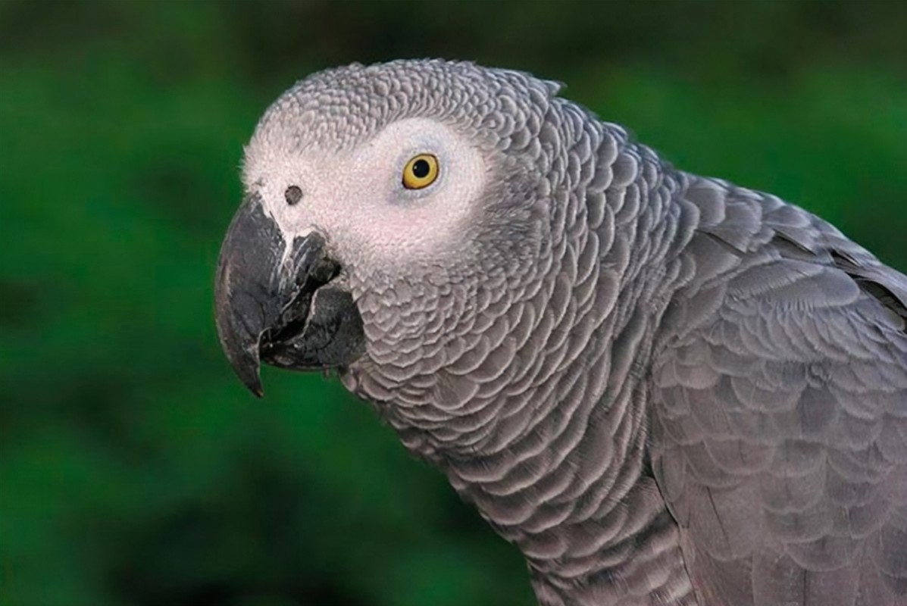

En Africa De todos los animales que podemos encontrar en peligro de extinción en África, sin duda, la parte más larga de la lista es la que ocupan los mamíferos. Esto se debe a que se trata de especies animales de grandes dimensiones, lo que hace que, tras siglos de caza y persecución, sus poblaciones hayan sido mermadas de manera salvaje. Además, aunque hoy en día muchos de estos animales están protegidos, la caza furtiva todavía sigue siendo una de las amenazas más peligrosas a las que se enfrentan.
   Algunos de los animales en pleigro de extincion que estan en africas son algunos de estos Rinoceronte Blanco, Elefante Africano,Burro Salvaje, Hipopotamos, Guepardo, Chimpance, Gorila, Jirafa, Culebra, Lagarto, Tortuga.
    